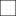

<!doctype html>
<html lang="en">
    <head>
        <meta charset="utf-8">
        <meta http-equiv="X-UA-Compatible" content="IE=edge">
        <meta name="viewport" content="initial-scale=1,user-scalable=no,maximum-scale=1,width=device-width">
        <meta name="mobile-web-app-capable" content="yes">
        <meta name="apple-mobile-web-app-capable" content="yes">
        <link rel="stylesheet" href="css/leaflet.css"><link rel="stylesheet" href="css/L.Control.Locate.min.css">
        <link rel="stylesheet" href="css/qgis2web.css"><link rel="stylesheet" href="css/fontawesome-all.min.css">
        <link rel="stylesheet" href="css/MarkerCluster.css">
        <link rel="stylesheet" href="css/MarkerCluster.Default.css">
        <link rel="stylesheet" href="css/leaflet-control-geocoder.Geocoder.css">
        <link rel="stylesheet" href="css/leaflet-measure.css">
        <style>
        html, body, #map {
            width: 100%;
            height: 100%;
            padding: 0;
            margin: 0;
        }
        </style>
        <title>Practica visor web</title>
    </head>
    <body>
        <div id="map">
        </div>
        <script src="js/qgis2web_expressions.js"></script>
        <script src="js/leaflet.js"></script><script src="js/L.Control.Locate.min.js"></script>
        <script src="js/leaflet.rotatedMarker.js"></script>
        <script src="js/leaflet.pattern.js"></script>
        <script src="js/leaflet-hash.js"></script>
        <script src="js/Autolinker.min.js"></script>
        <script src="js/rbush.min.js"></script>
        <script src="js/labelgun.min.js"></script>
        <script src="js/labels.js"></script>
        <script src="js/leaflet.wms.js"></script>
        <script src="js/leaflet-control-geocoder.Geocoder.js"></script>
        <script src="js/leaflet-measure.js"></script>
        <script src="js/leaflet.markercluster.js"></script>
        <script src="data/Barrios_1.js"></script>
        <script src="data/RutaspretroncalesMIO_2.js"></script>
        <script src="data/EstacionesMIO_5.js"></script>
        <script>
        var map = L.map('map', {
            zoomControl:true, maxZoom:19, minZoom:13
        })
        var hash = new L.Hash(map);
        map.attributionControl.setPrefix('<a href="https://github.com/tomchadwin/qgis2web" target="_blank">qgis2web</a> &middot; <a href="https://leafletjs.com" title="A JS library for interactive maps">Leaflet</a> &middot; <a href="https://qgis.org">QGIS</a>');
        var autolinker = new Autolinker({truncate: {length: 30, location: 'smart'}});
        L.control.locate({locateOptions: {maxZoom: 19}}).addTo(map);
        var measureControl = new L.Control.Measure({
            position: 'topleft',
            primaryLengthUnit: 'meters',
            secondaryLengthUnit: 'kilometers',
            primaryAreaUnit: 'sqmeters',
            secondaryAreaUnit: 'hectares'
        });
        measureControl.addTo(map);
        document.getElementsByClassName('leaflet-control-measure-toggle')[0]
        .innerHTML = '';
        document.getElementsByClassName('leaflet-control-measure-toggle')[0]
        .className += ' fas fa-ruler';
        var bounds_group = new L.featureGroup([]);
        function setBounds() {
            if (bounds_group.getLayers().length) {
                map.fitBounds(bounds_group.getBounds());
            }
            map.setMaxBounds(map.getBounds());
        }
        map.createPane('pane_MapaBase_0');
        map.getPane('pane_MapaBase_0').style.zIndex = 400;
        var layer_MapaBase_0 = L.tileLayer('https://mt1.google.com/vt/lyrs=p&x={x}&y={y}&z={z}', {
            pane: 'pane_MapaBase_0',
            opacity: 1.0,
            attribution: '<a href="https://www.google.at/permissions/geoguidelines/attr-guide.html">Map data ©2015 Google</a>',
            minZoom: 13,
            maxZoom: 19,
            minNativeZoom: 0,
            maxNativeZoom: 20
        });
        layer_MapaBase_0;
        map.addLayer(layer_MapaBase_0);
        function pop_Barrios_1(feature, layer) {
            var popupContent = '<table>\
                    <tr>\
                        <th scope="row">id_barrio</th>\
                        <td>' + (feature.properties['id_barrio'] !== null ? autolinker.link(feature.properties['id_barrio'].toLocaleString()) : '') + '</td>\
                    </tr>\
                    <tr>\
                        <th scope="row">barrio</th>\
                        <td>' + (feature.properties['barrio'] !== null ? autolinker.link(feature.properties['barrio'].toLocaleString()) : '') + '</td>\
                    </tr>\
                    <tr>\
                        <th scope="row">shape_leng</th>\
                        <td>' + (feature.properties['shape_leng'] !== null ? autolinker.link(feature.properties['shape_leng'].toLocaleString()) : '') + '</td>\
                    </tr>\
                    <tr>\
                        <th scope="row">shape_area</th>\
                        <td>' + (feature.properties['shape_area'] !== null ? autolinker.link(feature.properties['shape_area'].toLocaleString()) : '') + '</td>\
                    </tr>\
                </table>';
            layer.bindPopup(popupContent, {maxHeight: 400});
        }

        function style_Barrios_1_0() {
            return {
                pane: 'pane_Barrios_1',
                opacity: 1,
                color: 'rgba(1,1,1,1.0)',
                dashArray: '',
                lineCap: 'butt',
                lineJoin: 'miter',
                weight: 1.0, 
                fill: true,
                fillOpacity: 1,
                fillColor: 'rgba(150,150,150,0.21568627450980393)',
                interactive: true,
            }
        }
        map.createPane('pane_Barrios_1');
        map.getPane('pane_Barrios_1').style.zIndex = 401;
        map.getPane('pane_Barrios_1').style['mix-blend-mode'] = 'normal';
        var layer_Barrios_1 = new L.geoJson(json_Barrios_1, {
            attribution: '',
            interactive: true,
            dataVar: 'json_Barrios_1',
            layerName: 'layer_Barrios_1',
            pane: 'pane_Barrios_1',
            onEachFeature: pop_Barrios_1,
            style: style_Barrios_1_0,
        });
        bounds_group.addLayer(layer_Barrios_1);
        map.addLayer(layer_Barrios_1);
        function pop_RutaspretroncalesMIO_2(feature, layer) {
            var popupContent = '<table>\
                    <tr>\
                        <th scope="row">ruta</th>\
                        <td>' + (feature.properties['ruta'] !== null ? autolinker.link(feature.properties['ruta'].toLocaleString()) : '') + '</td>\
                    </tr>\
                    <tr>\
                        <th scope="row">nombre</th>\
                        <td>' + (feature.properties['nombre'] !== null ? autolinker.link(feature.properties['nombre'].toLocaleString()) : '') + '</td>\
                    </tr>\
                    <tr>\
                        <th scope="row">dia_tipo</th>\
                        <td>' + (feature.properties['dia_tipo'] !== null ? autolinker.link(feature.properties['dia_tipo'].toLocaleString()) : '') + '</td>\
                    </tr>\
                    <tr>\
                        <th scope="row">variante</th>\
                        <td>' + (feature.properties['variante'] !== null ? autolinker.link(feature.properties['variante'].toLocaleString()) : '') + '</td>\
                    </tr>\
                    <tr>\
                        <th scope="row">servicio</th>\
                        <td>' + (feature.properties['servicio'] !== null ? autolinker.link(feature.properties['servicio'].toLocaleString()) : '') + '</td>\
                    </tr>\
                    <tr>\
                        <th scope="row">tipologia</th>\
                        <td>' + (feature.properties['tipologia'] !== null ? autolinker.link(feature.properties['tipologia'].toLocaleString()) : '') + '</td>\
                    </tr>\
                    <tr>\
                        <th scope="row">fecha_impl</th>\
                        <td>' + (feature.properties['fecha_impl'] !== null ? autolinker.link(feature.properties['fecha_impl'].toLocaleString()) : '') + '</td>\
                    </tr>\
                    <tr>\
                        <th scope="row">habil</th>\
                        <td>' + (feature.properties['habil'] !== null ? autolinker.link(feature.properties['habil'].toLocaleString()) : '') + '</td>\
                    </tr>\
                    <tr>\
                        <th scope="row">sabado</th>\
                        <td>' + (feature.properties['sabado'] !== null ? autolinker.link(feature.properties['sabado'].toLocaleString()) : '') + '</td>\
                    </tr>\
                    <tr>\
                        <th scope="row">dom_fest</th>\
                        <td>' + (feature.properties['dom_fest'] !== null ? autolinker.link(feature.properties['dom_fest'].toLocaleString()) : '') + '</td>\
                    </tr>\
                    <tr>\
                        <th scope="row">fuente</th>\
                        <td>' + (feature.properties['fuente'] !== null ? autolinker.link(feature.properties['fuente'].toLocaleString()) : '') + '</td>\
                    </tr>\
                </table>';
            layer.bindPopup(popupContent, {maxHeight: 400});
        }

        function style_RutaspretroncalesMIO_2_0() {
            return {
                pane: 'pane_RutaspretroncalesMIO_2',
                opacity: 1,
                color: 'rgba(21,150,255,1.0)',
                dashArray: '',
                lineCap: 'square',
                lineJoin: 'bevel',
                weight: 1.0,
                fillOpacity: 0,
                interactive: false,
            }
        }
        map.createPane('pane_RutaspretroncalesMIO_2');
        map.getPane('pane_RutaspretroncalesMIO_2').style.zIndex = 402;
        map.getPane('pane_RutaspretroncalesMIO_2').style['mix-blend-mode'] = 'normal';
        var layer_RutaspretroncalesMIO_2 = new L.geoJson(json_RutaspretroncalesMIO_2, {
            attribution: '',
            interactive: false,
            dataVar: 'json_RutaspretroncalesMIO_2',
            layerName: 'layer_RutaspretroncalesMIO_2',
            pane: 'pane_RutaspretroncalesMIO_2',
            onEachFeature: pop_RutaspretroncalesMIO_2,
            style: style_RutaspretroncalesMIO_2_0,
        });
        bounds_group.addLayer(layer_RutaspretroncalesMIO_2);
        map.addLayer(layer_RutaspretroncalesMIO_2);
        map.createPane('pane_RutastroncalesMIO_3');
        map.getPane('pane_RutastroncalesMIO_3').style.zIndex = 403;
        var layer_RutastroncalesMIO_3 = L.WMS.layer("http://ws-idesc.cali.gov.co:8081/geoserver/wms?version=1.1.0", "metrocali:sitm_rutas_troncales", {
            pane: 'pane_RutastroncalesMIO_3',
            format: 'image/png',
            uppercase: true,
            transparent: true,
            continuousWorld : true,
            tiled: true,
            info_format: 'text/html',
            opacity: 1,
            identify: false,
            attribution: '',
        });
        map.addLayer(layer_RutastroncalesMIO_3);
        map.createPane('pane_Manzanas_4');
        map.getPane('pane_Manzanas_4').style.zIndex = 404;
        var layer_Manzanas_4 = L.WMS.layer("http://ws-idesc.cali.gov.co:8081/geoserver/wms?version=1.1.0", "catastro:cat_manzanas", {
            pane: 'pane_Manzanas_4',
            format: 'image/png',
            uppercase: true,
            transparent: true,
            continuousWorld : true,
            tiled: true,
            info_format: 'text/html',
            opacity: 1,
            identify: false,
            attribution: '',
        });
        map.addLayer(layer_Manzanas_4);
        function pop_EstacionesMIO_5(feature, layer) {
            var popupContent = '<table>\
                    <tr>\
                        <td colspan="2">' + (feature.properties['t_estacion'] !== null ? autolinker.link(feature.properties['t_estacion'].toLocaleString()) : '') + '</td>\
                    </tr>\
                    <tr>\
                        <th scope="row">nombre</th>\
                        <td>' + (feature.properties['nombre'] !== null ? autolinker.link(feature.properties['nombre'].toLocaleString()) : '') + '</td>\
                    </tr>\
                    <tr>\
                        <th scope="row">direccion</th>\
                        <td>' + (feature.properties['direccion'] !== null ? autolinker.link(feature.properties['direccion'].toLocaleString()) : '') + '</td>\
                    </tr>\
                    <tr>\
                        <td colspan="2">' + (feature.properties['corredor'] !== null ? autolinker.link(feature.properties['corredor'].toLocaleString()) : '') + '</td>\
                    </tr>\
                    <tr>\
                        <td colspan="2">' + (feature.properties['internas'] !== null ? autolinker.link(feature.properties['internas'].toLocaleString()) : '') + '</td>\
                    </tr>\
                    <tr>\
                        <td colspan="2">' + (feature.properties['externas'] !== null ? autolinker.link(feature.properties['externas'].toLocaleString()) : '') + '</td>\
                    </tr>\
                    <tr>\
                        <td colspan="2">' + (feature.properties['fuente'] !== null ? autolinker.link(feature.properties['fuente'].toLocaleString()) : '') + '</td>\
                    </tr>\
                </table>';
            layer.bindPopup(popupContent, {maxHeight: 400});
        }

        function style_EstacionesMIO_5_0() {
            return {
                pane: 'pane_EstacionesMIO_5',
                radius: 4.0,
                opacity: 1,
                color: 'rgba(35,35,35,1.0)',
                dashArray: '',
                lineCap: 'butt',
                lineJoin: 'miter',
                weight: 1,
                fill: true,
                fillOpacity: 1,
                fillColor: 'rgba(28,249,124,1.0)',
                interactive: true,
            }
        }
        map.createPane('pane_EstacionesMIO_5');
        map.getPane('pane_EstacionesMIO_5').style.zIndex = 405;
        map.getPane('pane_EstacionesMIO_5').style['mix-blend-mode'] = 'normal';
        var layer_EstacionesMIO_5 = new L.geoJson(json_EstacionesMIO_5, {
            attribution: '',
            interactive: true,
            dataVar: 'json_EstacionesMIO_5',
            layerName: 'layer_EstacionesMIO_5',
            pane: 'pane_EstacionesMIO_5',
            onEachFeature: pop_EstacionesMIO_5,
            pointToLayer: function (feature, latlng) {
                var context = {
                    feature: feature,
                    variables: {}
                };
                return L.circleMarker(latlng, style_EstacionesMIO_5_0(feature));
            },
        });
        var cluster_EstacionesMIO_5 = new L.MarkerClusterGroup({showCoverageOnHover: false,
            spiderfyDistanceMultiplier: 2});
        cluster_EstacionesMIO_5.addLayer(layer_EstacionesMIO_5);

        bounds_group.addLayer(layer_EstacionesMIO_5);
        cluster_EstacionesMIO_5.addTo(map);
            var title = new L.Control();
            title.onAdd = function (map) {
                this._div = L.DomUtil.create('div', 'info');
                this.update();
                return this._div;
            };
            title.update = function () {
                this._div.innerHTML = '<h2>Practica visor web</h2>';
            };
            title.addTo(map);
        var osmGeocoder = new L.Control.Geocoder({
            collapsed: true,
            position: 'topleft',
            text: 'Search',
            title: 'Testing'
        }).addTo(map);
        document.getElementsByClassName('leaflet-control-geocoder-icon')[0]
        .className += ' fa fa-search';
        document.getElementsByClassName('leaflet-control-geocoder-icon')[0]
        .title += 'Search for a place';
        var baseMaps = {};
        L.control.layers(baseMaps,{' Estaciones MIO': cluster_EstacionesMIO_5,"Manzanas": layer_Manzanas_4,"Rutas troncales MIO": layer_RutastroncalesMIO_3,' Rutas pretroncales MIO': layer_RutaspretroncalesMIO_2,' Barrios': layer_Barrios_1,"Mapa Base": layer_MapaBase_0,}).addTo(map);
        map.on("zoomend", function(){

                if (map.hasLayer(layer_Barrios_1)) {
                    if (map.getZoom() <= 19 && map.getZoom() >= 19) {
                        layer_Barrios_1.eachLayer(function (layer) {
                            layer.openTooltip();
                        });
                    } else {
                        layer_Barrios_1.eachLayer(function (layer) {
                            layer.closeTooltip();
                        });
                    }
                }
        });
        setBounds();
        var i = 0;
        layer_EstacionesMIO_5.eachLayer(function(layer) {
            var context = {
                feature: layer.feature,
                variables: {}
            };
            layer.bindTooltip((layer.feature.properties['nombre'] !== null?String('<div style="color: #323232; font-size: 10pt; font-family: \'Helvetica\', sans-serif;">' + layer.feature.properties['nombre']) + '</div>':''), {permanent: true, offset: [-0, -16], className: 'css_EstacionesMIO_5'});
            labels.push(layer);
            totalMarkers += 1;
              layer.added = true;
              addLabel(layer, i);
              i++;
        });
                if (map.hasLayer(layer_Barrios_1)) {
                    if (map.getZoom() <= 19 && map.getZoom() >= 19) {
                        layer_Barrios_1.eachLayer(function (layer) {
                            layer.openTooltip();
                        });
                    } else {
                        layer_Barrios_1.eachLayer(function (layer) {
                            layer.closeTooltip();
                        });
                    }
                }
        resetLabels([layer_Barrios_1,layer_RutaspretroncalesMIO_2,layer_EstacionesMIO_5]);
        map.on("zoomend", function(){
            resetLabels([layer_Barrios_1,layer_RutaspretroncalesMIO_2,layer_EstacionesMIO_5]);
        });
        map.on("layeradd", function(){
            resetLabels([layer_Barrios_1,layer_RutaspretroncalesMIO_2,layer_EstacionesMIO_5]);
        });
        map.on("layerremove", function(){
            resetLabels([layer_Barrios_1,layer_RutaspretroncalesMIO_2,layer_EstacionesMIO_5]);
        });
        </script>
    </body>
</html>
